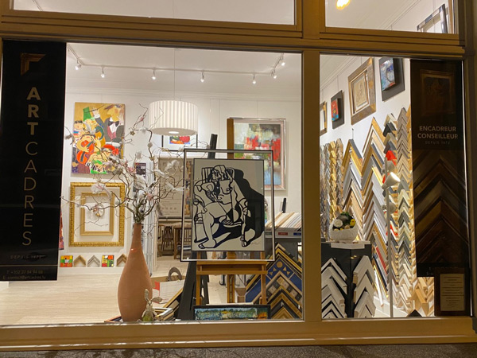
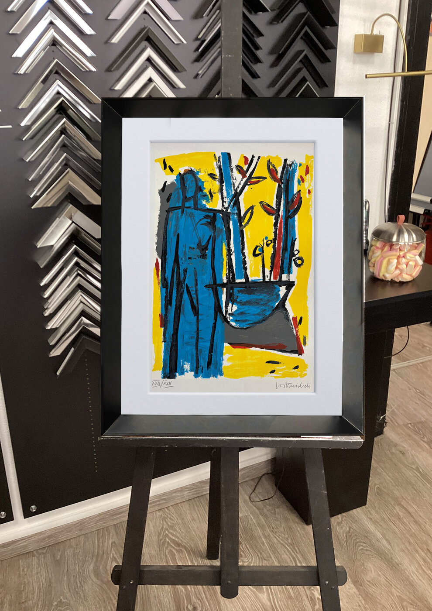
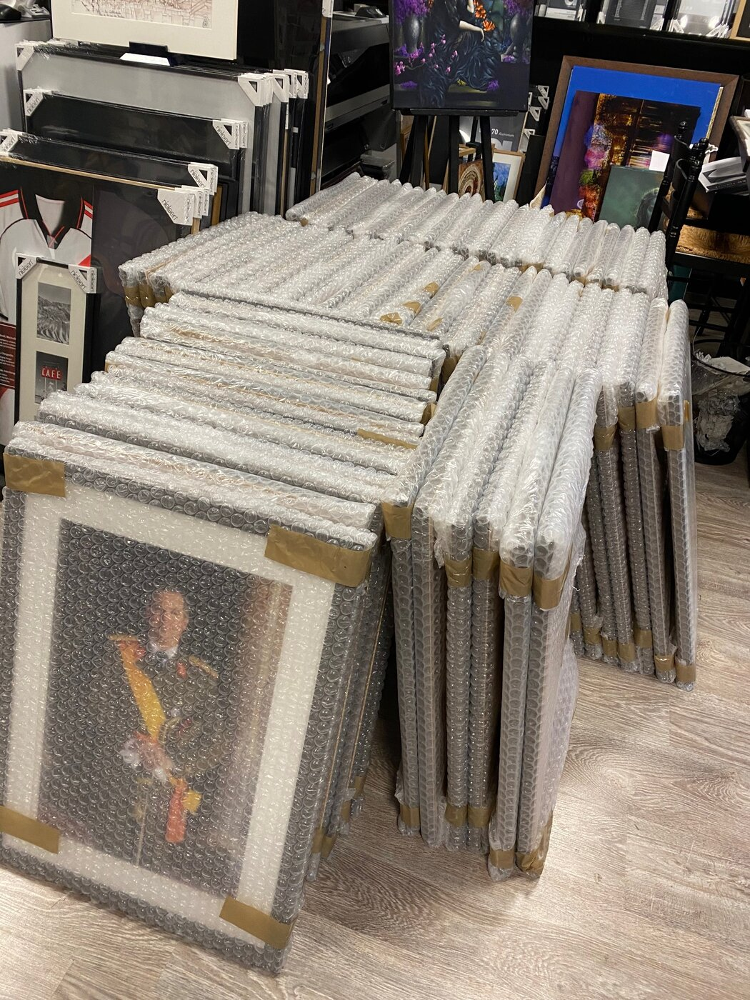

Notre histoire
Art'Cadres Luxembourg réunit en un même lieu l'encadrement sur mesure, la restauration de tableaux, la dorure et une galerie d'art. Un espace unique où savoir-faire artisanal, conseil personnalisé et passion de l'art se rencontrent.

L'excellence de l'encadrement sur mesure
Chez Art'Cadres Luxembourg, chaque œuvre mérite une présentation à la hauteur de son histoire, de sa valeur et de son caractère.
Forte de plus de 30 années d'expérience, Kathia Neumann met son expertise artisanale et son regard esthétique au service de créations entièrement sur mesure. Chaque projet fait l'objet d'une étude attentive, pour un encadrement en parfaite harmonie avec l'œuvre, son environnement et la sensibilité de son propriétaire.
Moulures contemporaines ou classiques, finitions raffinées, verres de protection, passe-partout et techniques traditionnelles : chaque détail est sélectionné avec exigence pour donner naissance à une pièce unique.
Nos métiers réunis en un même lieu
- Encadrement sur mesureBaguette, passe-partout et verre choisis pour sublimer chaque œuvre.
- Restauration de tableauxConservation et remise en valeur des pièces anciennes.
- Dorure à la feuilleCadres, miroirs et objets dorés selon les techniques traditionnelles.
- Galerie d'artUne collection coup de cœur, encadrée et mise en lumière.



« Chaque œuvre mérite une présentation à la hauteur de son histoire. »
Particuliers, artistes, collectionneurs, architectes, décorateurs, entreprises et institutions bénéficient d'un accompagnement confidentiel, personnalisé et exigeant.